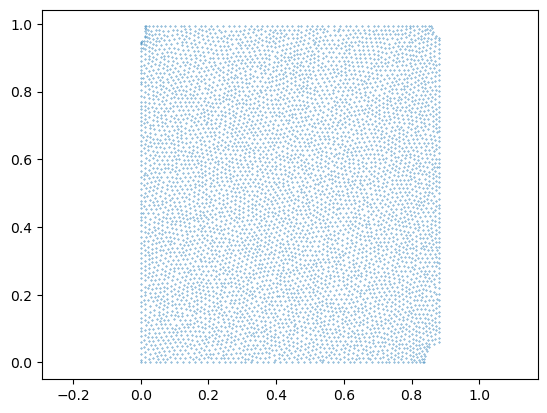

metadata_dict = {'filename': 'datasets/basics_example/basics_example',
'resolution_in_microns': (1, 0.36, 0.36), # you can typically get this from the .tif metadata
'subsampling_factors': (1, 1/3, 1/3), # how much you subsampled your image for segmentation
}Mesh data structure
Data structure for triangular meshes and UV maps
In this notebook, we define a class for triangular meshes with UV maps, and show how to use it with the data from the basics_example folder.
Let’s define the metadata for the example dataset: the filename, resolution in microns, and how much we subsampled for segmentation purposes. This is important for correctly scaling mesh vertex positions when computing the mesh from image data.
Important convention For sanity’s sake, we will always store all mesh coordinates in microns. This means rescaling appropriately after calculating the mesh from the 3d segmentation.
invert_dictionary
invert_dictionary (my_map, assume_unique=False)
*Invert key -> value map defined by a dictionary
If assume_unique is True, key/value pairs are assumed to be unique. Else, a dictionary of lists is returned. Each entry is a list of keys that map to the given value.*
index_else_nan
index_else_nan (arr, inds)
Return arr[inds], masked so that the result is np.nan wherever ind is nan
unique
unique (sequence)
Create list of unique entries in sequence while preserving order
pad_list
pad_list (lst, length=3, fill_value=nan)
Pad end of list with fill_value if shorter than the desired length.
flatten
flatten (lst, max_depth=1000, iter_count=0)
*Flatten a list of lists into a list.
Also works with inhomogeneous lists, e.g., [[0,1],2]. The argument depth determines how “deep” to flatten the list, e.g. with max_depth=1: [[(1,0), (1,0)]] -> [(1,0), (1,0)].*
| Type | Default | Details | |
|---|---|---|---|
| lst | list | list-of-lists. | |
| max_depth | int | 1000 | To what depth to flatten the list. |
| iter_count | int | 0 | Helper argument for recursion depth determination. |
| Returns | iterator | flattened list. |
The ObjMesh class
We now define our main class for mesh io and mesh handling. We save all meshes as wavefront .obj files (see wikipedia). In Python, we represent missing entries (such as a vertex that doesn’t have a normal by np.nan.
For reading, writing, holding, and handling .obj meshes, we will create the ObjMesh class. You can think of an .obj mesh as a map between two meshes (the mesh in 3d, and its texture coordinates in 2d), defined on a per-face basis.
Handling of non-triangular meshes
We prefer to work with triangulated meshes. For triangulated meshes: 1. there is a well-defined way to interpolate data across mesh faces (barycentric interpolation) 2. the deformation of a face under a mapping (e.g. cartographic map to the plane) is uniquely defined 3. many more algorithms are available (notably in igl)
Non-triangular meshes and meshes with mixes of triangles and higher-order faces, like quads, are supported by this data structure, but not recommended.
ObjMesh
ObjMesh (vertices, faces, texture_vertices=None, normals=None, name=None)
*Simple class for reading, holding, transforming, and saving 3d polygonal meshes in the .obj format. See https://en.wikipedia.org/wiki/Wavefront_.obj_file.
An ObjMesh comprises vertices and faces, describing a surface in 3d, (optionally) per-vertex normals, and (optionally), texture vertices and texture faces that describe how the surface is mapped to 2d.
Vertices, texture_vertices, normals are np.arrays, faces is a list. Each face is either a list of vertex indices, or, if the mesh has texture information, a list of vertex/texture vertex index pairs, describing which face maps to which texture face. Note: the number of texture vertices and vertices is not necessarily equal!
Normals are always defined per-vertex, i.e. self.normals[i] is the normal vector at self.vertices[i]. Missing data is represented by np.nan. Faces can be any length (triangles, quads, …). Indices start at 0!
Attributes
vertices : np.array of shape (#vertices, dimension).
texture_vertices : np.array of shape (#texture vertices, 2) or None
normals : np.array of shape (#vertices, dimension) or None
faces : List[List[int]] or List[List[(int, int]]]
Property methods (use like attributes)
only_vertices : bool, whether mesh has texture information
is_triangular : bool
tris : np.array of shape (#triangular faces, 3). Triangular 3d faces
texture_tris : np.array of shape (#triangular faces, 3). Triangular texture faces. Note: undefined texture faces are represented by [0, 0, 0]*
nbdev.show_doc(ObjMesh.set_normals)ObjMesh.set_normals
ObjMesh.set_normals ()
Recompute normals based on 3d positions. Only works for triangular meshes.
nbdev.show_doc(ObjMesh.get_uv_index_to_vertex_index_map)ObjMesh.get_uv_index_to_vertex_index_map
ObjMesh.get_uv_index_to_vertex_index_map ()
Get map from texture vertex index to the corresponding 3d vertex index as a dictionary.
nbdev.show_doc(ObjMesh.get_vertex_index_to_uv_index_map)ObjMesh.get_vertex_index_to_uv_index_map
ObjMesh.get_vertex_index_to_uv_index_map ()
*Get map from 3d vertex index to the corresponding UV vertex index as a dictionary.
Note: each dict value is a list, since a 3d vertex can map to multiple UV vertices. For vertices that do not have any corresponding UV vertex, the list is empty.*
nbdev.show_doc(ObjMesh.get_vertex_to_texture_vertex_indices)ObjMesh.get_vertex_to_texture_vertex_indices
ObjMesh.get_vertex_to_texture_vertex_indices ()
*Get an array of indices into 3d vertices that map them to the corresponding texture vertices.
Useful for translating per-vertex data into per-texture-vertex data: array -> array[self.get_vertex_to_texture_vertex_indices()]*
nbdev.show_doc(ObjMesh.map_per_vertex_to_per_texture_vertex)ObjMesh.map_per_vertex_to_per_texture_vertex
ObjMesh.map_per_vertex_to_per_texture_vertex (field)
Map per-vertex field (array of shape (n_vertices, …)) to texture vertices. vertices.
nbdev.show_doc(ObjMesh.map_per_texture_vertex_to_per_vertex)ObjMesh.map_per_texture_vertex_to_per_vertex
ObjMesh.map_per_texture_vertex_to_per_vertex (field)
Map per-texture vertex field (array of shape (n_texture_vertices, …)) to 3d vertices. vertices.
nbdev.show_doc(ObjMesh.cut_along_seams)ObjMesh.cut_along_seams
ObjMesh.cut_along_seams ()
*Cut mesh along texture seams.
Returns a new ObjMesh in which the topology of the vertices matches the topology of the texture vertices, by duplicating vertices along “seams” (i.e. which have multiple corresponding texture vertices), and discarding any vertices without texture coordinates.*
nbdev.show_doc(ObjMesh.apply_affine_to_mesh)ObjMesh.apply_affine_to_mesh
ObjMesh.apply_affine_to_mesh (trafo)
*Apply affine transformation to mesh.
Rotate/shear and translate vertices, rotate/shear and renormalize normals, flip faces if the transformation determinant is -1.*
| Type | Details | |
|---|---|---|
| trafo | np.array of shape (4,4) or (3,3) | Transformation matrix. If (4,4), it is interpreted as an affine transformation. |
| Returns | ObjMesh | Transformed mesh. |
read_other_formats_without_uv
read_other_formats_without_uv (filename)
*Return vertices and faces from a non-.obj mesh file format. file.
Supported formats are .obj, .off, .stl, .wrl, .ply, .mesh. Will NOT read in normals or texture coordinates. If you have texture coordinates, save your mesh as .obj. Will only return triangular faces.
See https://libigl.github.io/libigl-python-bindings/igl_docs/#read_triangle_mesh.*
| Type | Details | |
|---|---|---|
| filename | str | filename |
UV mapping by projecting from view
By design, blender_tissue_cartography does not feature functionality to create UV maps computationally - that’s what you’re supposed to do in Blender! With one exception: projection from an axis. This takes the 3d coordinates of a mesh, and projects it along a user-selected axis to 2d. This is useful when creating a projection of a mildly curved, disk-topology surface, and can directly be applied to time-lapse images.
compute_project_from_axis_scale
compute_project_from_axis_scale (image_shape, resolution, axis1, axis2)
*Compute scaling factor for UV coordinates obtained projecting 3D coordinates along an axis.
UV coordinates must be scaled to lie between 0 and 1. To get a consistent scaling across e.g. different frames of a movie, this function computes the scale factor based on the projection axes and the shape of the volumetric image.*
| Type | Details | |
|---|---|---|
| image_shape | list or np.array of length 3 | Shape of image in pixels |
| resolution | np.array of shape (3,) | Resolution of image in microns/pixel along each axis |
| axis1 | ||
| axis2 | np.array of shape (3,) | vector defining the axis projected to V coordinate |
| Returns | float | scaling factor to ensure UV coordinates lie in [0, 1] |
project_from_axis
project_from_axis (mesh, axis1, axis2, translate=None, scale=None)
*Create UV map by projecting 3D coordinates along an axis.
The UV topology will be identical to the 3D topology (no seams), and there may be self-intersections.
The projected coordinates should be scaled to lie in [0,1]^2. The scale factor can be found automatically or be computed from the shape and resolution of a 3D image using*
| Type | Default | Details | |
|---|---|---|---|
| mesh | ObjMesh | ||
| axis1 | np.array of shape (3,) | vector defining the axis projected to U coordinate | |
| axis2 | np.array of shape (3,) | vector defining the axis projected to V coordinate | |
| translate | NoneType | None | translation to ensure UV coordinates are positive. If None, the minimum of U & V is used. |
| scale | NoneType | None | scaling factor to ensure UV coordinates lie in [0, 1]. If None, the maximum of U & V is used. |
| Returns | mesh_projected: ObjMesh | New mesh, with UV map. UV and |
mesh_test = ObjMesh.read_obj("datasets/basics_example/basics_example_mesh_remeshed.obj")
# get the scale from the datasets/basics_example/basics_example.tif volumetric dataset
scale = compute_project_from_axis_scale(image_shape=(26, 454, 511), resolution=(1, 0.36, 0.36),
axis1=np.array([0,1,0]), axis2=np.array([0,0,1]))
mesh_projected = project_from_axis(mesh_test, axis1=np.array([0,1,0]), axis2=np.array([0,0,1]), scale=scale, translate=0)plt.scatter(*mesh_projected.texture_vertices.T, s=0.1)
plt.axis("equal")(-0.04403131115459883,
0.9246575342465754,
-0.049608610567514685,
1.0417808219178084)
Test read/write
# let's consider some examples
mesh_cube = "datasets/basics_example/cube.obj"
mesh_mixed = "datasets/basics_example/cube_mixed.obj"
mesh_large = "datasets/registration_example/Drosophila_reference.obj"
mesh_no_uv = "datasets/basics_example/cube_no_uv.obj"
mesh_only_normals = "datasets/basics_example/cube_only_normals.obj"
mesh_partial_uv = "datasets/basics_example/cube_partial_uv.obj"
mesh_partial_uv_large = "datasets/basics_example/torus.obj"mesh = ObjMesh.read_obj(mesh_cube)/tmp/ipykernel_1942162/3286167482.py:118: DeprecationWarning: Warning: non-triangular meshes are deprecated
warnings.warn(f"Warning: non-triangular meshes are deprecated", DeprecationWarning)
Warning: readOBJ() ignored non-comment line 3:
o CubeObjMesh.read_obj(mesh_mixed)Warning: readOBJ() ignored non-comment line 3:
o Cube
/tmp/ipykernel_1942162/3286167482.py:82: DeprecationWarning: Warning: non-triangular meshes are deprecated
warnings.warn(f"Warning: non-triangular meshes are deprecated", DeprecationWarning)<__main__.ObjMesh>read_other_formats_without_uv("datasets/wrapping_example/mixed_faces_example.obj")Warning: readOBJ() ignored non-comment line 4:
o Cube<__main__.ObjMesh># test the read_obj function on an example
mesh_fname_data = "datasets/registration_example/Drosophila_CAAX-mCherry_mesh_remeshed.obj"
mesh = ObjMesh.read_obj(mesh_fname_data)Warning: readOBJ() ignored non-comment line 1:
o Drosophila_reference_preregisteredObjMesh.read_obj(mesh_mixed).facesWarning: readOBJ() ignored non-comment line 3:
o Cube
/tmp/ipykernel_1942162/3286167482.py:82: DeprecationWarning: Warning: non-triangular meshes are deprecated
warnings.warn(f"Warning: non-triangular meshes are deprecated", DeprecationWarning)[[0, 1, 3, 2],
[2, 3, 7, 6],
[6, 7, 5, 4],
[4, 5, 1, 0],
[2, 6, 4, 0],
[3, 5, 7],
[3, 1, 5]]# for meshes with partial UV information, missing data is represented by np.nan
ObjMesh.read_obj(mesh_partial_uv).facesWarning: readOBJ() ignored non-comment line 3:
o Cube
Error: readOBJ() face on line 32 has invalid format[[[1, nan], [2, nan], [0, nan]],
[[3, nan], [6, nan], [2, nan]],
[[7, nan], [4, nan], [6, nan]],
[[5, 1], [0, 2], [4, 3]],
[[6, nan], [0, nan], [2, nan]],
[[3, 4], [5, 1], [7, 5]],
[[1, nan], [3, 0], [2, nan]],
[[3, nan], [7, nan], [6, nan]],
[[7, 12], [5, nan], [4, nan]],
[[5, 1], [1, 6], [0, 2]],
[[6, nan], [4, nan], [0, nan]],
[[3, 4], [1, 6], [5, 1]]]Mesh cutting and gluing
The cut_along_seams method can be used to “cut” a mesh along its UV seams. This duplicates 3d vertices so that the 3d topology and the unwrapped UV topology match. For example, if your UV map cuts your sphere mesh into a north and a south hemisphere for unwrapping, cut_along_seams will cut the mesh into two halves.
Conversely, glue_seams undoes the cutting by merging close vertices.
glue_seams
glue_seams (mesh, decimals=None)
*Merge close vertices.
Useful to undo cutting of meshes along UV seams. Note: the exact order of vertices will not in general be recovered by gluing after cutting.*
| Type | Default | Details | |
|---|---|---|---|
| mesh | ObjMesh | ||
| decimals | NoneType | None | Vertices whose positions agree up to ‘decimals’ decimals are merged. Note: you can use negative values. If None, estimate a value based on the shortest edge length in the mesh (-2*log_10(minimum length)) |
| Returns | ObjMesh | Mesh with merged vertices. |
mesh = ObjMesh.read_obj("datasets/movie_example/initial_uv.obj")
mesh_cut = mesh.cut_along_seams()
glued_mesh = glue_seams(mesh_cut)
glued_mesh.write_obj("datasets/movie_example/initial_uv_glued.obj")
mesh.vertices.shape, mesh_cut.vertices.shape, glued_mesh.vertices.shapeWarning: readOBJ() ignored non-comment line 4:
o mesh_01_cylinder_seams_uv((20212, 3), (20623, 3), (12036, 3))